Three Platforms for a Platformer
Your first Piskel lesson. Draw three platforms a game character can stand on: a long grassy ground strip, a small floating stone block, and a round log. No animation, just shapes, fills and a few lines.
What you will build
Three separate pictures (PNG files), each a different size. Here they are together in a game scene:

| Platform | Size | Style |
|---|---|---|
| Big ground platform | 64 × 16 pixels | Grass on top, dirt underneath. Place several side by side to make a long floor. |
| Small floating block | 16 × 16 pixels | A grey stone square with a light top edge and a dark bottom edge, so it looks raised. |
| Log platform | 48 × 16 pixels | Rounded ends and bark lines, with a light stripe on top so it looks round, like a cylinder lying down. |
| Tool | What it is for | Link |
|---|---|---|
| Piskel | Drawing the platforms and saving them as pictures | piskelapp.com |
- Piskel is free and runs in the browser. Nothing needs installing and you do not need an account.
- The address is piskelapp.com, not piskel.com.
- You hardly draw pixel by pixel. Most of the work is three tools: Rectangle for the outline, Paint bucket to fill it, and Stroke for straight lines.
- Each platform is made in two steps: a basic shape first (quick, mostly big tools), then details drawn pixel by pixel. For the details you can copy the numbered pattern exactly, or make up your own.
- Your colours do not have to match. Make the grass purple or the stone gold if you like, as long as you keep the sizes.
- Time: about one class period for the basic shapes, plus part of a second class for all the details.
- Click a part to open it. Opening one part closes the others. Tick every checkpoint box before you move on; your ticks are remembered on this computer.
Lesson brief
If you already know Piskel, follow the chart and you can finish from it alone. Click any box to jump to its full steps; the Back to the brief button brings you back here.
Part 1 · Open Piskel
Create Sprite
64 × 16 px
Settings › Misc: plain light background
Settings › Grid: on, thinnest, every pixel, pink
7 colours from the table
Part 2 · Big ground platform
Whole canvas, corner to corner
Across from side to side
Grass #5AC850 · Dirt #8B5A2B
Drips under row 5
Stones #B4A08C
Export → PNG → Download
Part 3 · Small floating block
Resize 16 × 16
Optional: Block palette, 4 colours
Bucket #8C8C96
dark #5F5F69 bottom + right
Crack
block.png
Part 4 · Log platform
Resize 48 × 16
Optional: Log palette, 6 colours
Erase 3 px per corner, add 1 inside
rows 9 + 13 #6B4220
Knot · break the bark lines
log.png
Part 5 · Hand in
3 .piskel + 3 .png
Each colour is one part. Codes like 2B mean Part 2, section B. Underlined words are links. Codes like #5AC850 are colours. If you made a palette, (swatch 2) tells you which square to click. Row and column numbers count from 1, matching the numbers on the picture grids.
Part 1 · Open Piskel
You start with an empty, long, flat canvas (64 pixels wide, 16 tall) with a grid on it, ready for the ground platform.
| Where things are in Piskel | Location on screen |
|---|---|
| Tools (Pen, Paint bucket, Eraser, Stroke, Rectangle…) | Far left, two columns of icons |
| Pen size (four small squares) | Far left, just above the tools |
| Colour squares (primary and secondary) | Far left, under the tools |
| Palettes panel | Right side, under the Preview and Layers |
| Canvas (where you draw) | Middle of the screen |
| Preview window and the quick # grid button | Top-right corner. The # button stays hidden until you move the mouse to the top of the Preview window, under Create Sprite. |
| Settings (gear) and its Grid tab | Strip of icons on the far right edge. Background (Misc tab), grid colour and turning the grid on (Grid tab) are set here. |
| Resize, Save, Export, Import buttons | A strip of icons down the far right edge |
Hold your mouse over any icon and its name pops up. Piskel has no hidden panels to lose; if the screen looks squashed, make the browser window full screen.
1A · New sprite
- Go to piskelapp.com.
- Click Create Sprite. The editor opens with a blank square canvas in the middle.
1B · Canvas size and grid
| Resize | Value |
|---|---|
| Width | 64 px |
| Height | 16 px |
| Maintain aspect ratio | Unticked |
- Click the Resize icon
 (top of the strip on the far right edge). A panel slides out showing Width, Height and two tick boxes.
(top of the strip on the far right edge). A panel slides out showing Width, Height and two tick boxes. - Click Maintain aspect ratio to untick it. While it is ticked, Piskel keeps the canvas square and changes the Height whenever you change the Width.
- Type 64 in Width and 16 in Height, then click the Resize button at the bottom of the panel. The canvas becomes a long, flat strip.
- Click the Resize icon again to close the panel.
- Set up the grid first. Click the Settings icon
 (the gear in the strip on the far right edge). A panel slides out on the Misc tab. Beside Background, click the third square (plain light grey). The checkerboard behind your drawing looks like a grid of its own and hides the real grid lines, so a plain background makes them stand out.
(the gear in the strip on the far right edge). A panel slides out on the Misc tab. Beside Background, click the third square (plain light grey). The checkerboard behind your drawing looks like a grid of its own and hides the real grid lines, so a plain background makes them stand out. Now click the Grid tab and set:
Now click the Grid tab and set:Grid tab Setting Enable grid Ticked Grid size First square (thinnest lines) Grid spacing First square (a line around every pixel) Grid color Pink (bottom row, fourth square). Green would vanish on the grass, and black or dark colours blend into the dark brown outlines.  Thin lines appear on the canvas, one square per pixel. Click the gear again to close the panel. Your strip should look like this:
Thin lines appear on the canvas, one square per pixel. Click the gear again to close the panel. Your strip should look like this:
- Quick on/off button. Once the grid is set up, you can hide or show it without opening Settings. Move your mouse to the top of the Preview window (top-right corner, just under the Create Sprite button). Three small buttons appear. They stay hidden until the mouse is over them.
 The middle one, #, turns the grid off and on. Click it twice to try it, and leave the grid on.
The middle one, #, turns the grid off and on. Click it twice to try it, and leave the grid on. - Scroll the mouse wheel over the canvas to zoom in until the strip fills the middle of the screen.
1C · Make your Ground palette (optional)
Optional, but it saves time. A palette keeps the colours for a drawing in one place. You type each colour code once, then just click it, instead of typing the same codes again and again. Real pixel artists work this way. If you skip it, you type each code when a step asks for it (see How to pick a colour in Part 2).
| Swatch | Colour code | Used for |
|---|---|---|
| 1 | #3B2414 | very dark brown (outline) |
| 2 | #5AC850 | green (grass) |
| 3 | #8B5A2B | brown (dirt) |
| 4 | #96E678 | light green (grass highlight) |
| 5 | #3C9637 | dark green (grass shadow) |
| 6 | #6B4220 | darker brown (specks) |
| 7 | #B4A08C | pale grey-brown (stones) |
- Find the Palettes panel (right side, under the Preview and Layers). It has a +, a dropdown with the palette's name, and a pencil.
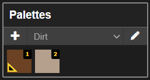
- Click +. The Edit Palette window opens. In Name, delete what is there and type Ground.
- Click the first colour square (if there isn't one, click the dashed + square). In the box under the colour picker, delete what is there, type #3B2414 and press Enter. The square turns very dark brown.
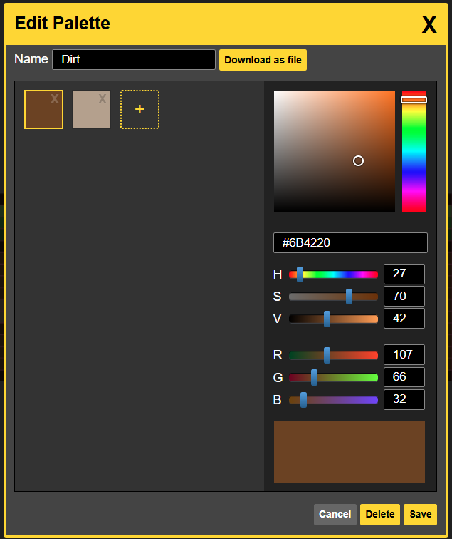
This example palette is called Dirt and has two colours. Yours is called Ground. - Click the dashed + square to add a new square, then type the next code from the table and press Enter. Repeat until you have all 7 squares, in the table's order.
- Click Save (bottom-right). The Palettes panel now shows Ground with swatches numbered 1 to 7.
Part 2 · Big ground platform
First the basic shape: a dark brown box, a line to split off the grass, and two fills. Then the details.
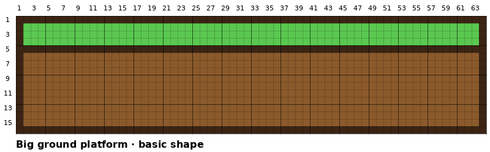
| Swatch | Part of the platform | Colour code |
|---|---|---|
| 1 | Outline and grass line | #3B2414 (very dark brown) |
| 2 | Grass | #5AC850 (green) |
| 3 | Dirt | #8B5A2B (brown) |
| 4 | Grass highlight | #96E678 (light green) |
| 5 | Grass shadow and drips | #3C9637 (dark green) |
| 6 | Specks and stone shadows | #6B4220 (darker brown) |
| 7 | Stones | #B4A08C (pale grey-brown) |
How to pick a colour: click the big primary colour square (far left, under the tools). It starts black. The checkered square behind it is the secondary colour (see-through to start), and the curved arrow swaps the two.
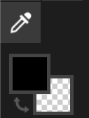
A colour chooser opens. Click in the text box at the bottom (it shows #000000 at first), delete what is there, type the colour code (for example #3B2414) and press Enter, then click back on the canvas to close the chooser. The primary square changes to that colour. The primary colour paints with the left mouse button.
Click in the text box at the bottom (it shows #000000 at first), delete what is there, type the colour code (for example #3B2414) and press Enter, then click back on the canvas to close the chooser. The primary square changes to that colour. The primary colour paints with the left mouse button.
Made a palette in 1C? Skip the typing: just click the colour's swatch in the Palettes panel. Each step gives the swatch number, e.g. #5AC850 (swatch 2).
Tip: the eyedropper just above the colour squares copies a colour already on your canvas. Click the eyedropper, then click a pixel, and the primary square changes to that colour. It is handy for going back to a colour you used earlier.
2A · Outline
- Check the Pen size (four squares above the tools) is set to the smallest square, 1 pixel. The one in use has a yellow outline. The Rectangle and Stroke tools use this size too.

- Pick the outline colour #3B2414 (swatch 1).
- Choose the Rectangle tool (an empty square icon in the tools; hover to check its name).
- Press the mouse button on the top-left square of the canvas, drag to the bottom-right square, and let go. A dark brown box appears all the way around the edge of the canvas.
2B · Grass line
- Keep #3B2414 (swatch 1). Choose the Stroke tool
 (a pen drawing a straight line).
(a pen drawing a straight line). - Find row 5 using the numbers down the left of the picture grid above (4 rows down from the top edge is grass).
- Press on the left outline at row 5, drag straight across to the right outline at row 5, and let go. A dark line now splits the strip into a thin top band and a thick bottom band.
2C · Fill the grass and dirt
- Pick #5AC850 (swatch 2) and choose the Paint bucket tool (the tipping paint can).
- Click anywhere inside the thin top band. It all turns green.
- Pick #8B5A2B (swatch 3) and click inside the thick bottom band. It all turns brown.
- If a colour spills out over the whole background, there is a gap in the outline. Press Ctrl+Z, find the gap, and close it with the Pen tool (top of the tools).
On your screen, the basic ground platform should look like this, before any details:
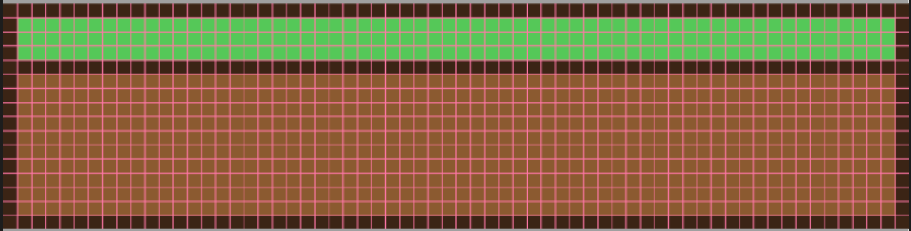
2D · Grass details
Now copy the detailed pattern, or make up your own details. The numbers along the top and side count the pixels, so you can find your place.

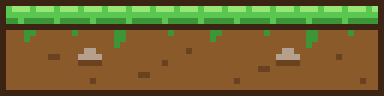
- Pick #96E678 (swatch 4) and choose the Stroke tool . Drag along row 2 from column 2 to column 63. The top of the grass turns light green.
- Choose the Pen tool and pick the plain green #5AC850 (swatch 2). On row 2, click every 4th pixel to put plain green back (columns 2, 6, 10, 14 and so on, as in the picture). The gaps look like separate blades of grass.
- Pick #3C9637 (swatch 5) and the Stroke tool . Drag along row 4 from column 2 to column 63. This is the shadow at the bottom of the grass.
- With the Pen and green #5AC850 (swatch 2), put a few plain green pixels back on row 4 (every 6th pixel in the picture).
- Pick #3C9637 (swatch 5) again. With the Pen, draw the drips: short bits of grass hanging down into the dirt, just below the dark line on row 5. Each drip is 1 to 3 pixels long, going straight down. Copy where they are in the picture, or put your own.
- Made a mistake? Right-click a pixel with the Pen to erase it, then put the right colour back with the Pen.
2E · Dirt details
- Pick #6B4220 (swatch 6) and, with the Pen, draw about 12 specks spread out in the dirt. Most are 2 pixels side by side; some are 1 pixel.
- Stones: pick #B4A08C (swatch 7) and draw a small bump shape: 2 pixels on top, 4 pixels on the row below it. Then pick #6B4220 (swatch 6) and draw the shadow on the row under that (look at columns 14 to 17, rows 9 to 11, in the picture). Make two stones.
2F · Save and export
You make two files for each platform: a .piskel file so you can keep editing later, and a .png picture for the game.
- Click the Save icon
 (strip on the far right edge, under Resize). A panel slides out.
(strip on the far right edge, under Resize). A panel slides out. - Delete what is in Title and type ground. You can type ground in Description too.
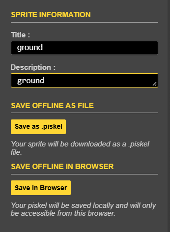
- Under Save offline as file, click the yellow Save as .piskel button. A file called ground.piskel downloads (check your Downloads folder).
- Click the Export icon (far right edge, under Save). A panel slides out with tabs along the top: GIF, PNG, Zip, Others.
- Leave Scale at 1.0x. Resolution should read 64 × 16.
- Click the PNG tab, then under Spritesheet file export click Download. Beside it, it should say 64 x 16 px, 1 frame.
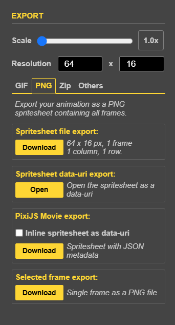
A file called ground.png downloads. Open it to check: it is your platform, small and sharp. - Click the Export icon again to close the panel. Leave this tab open.
Part 3 · Small floating block
A small stone square. A light line on the top and left and a dark line on the bottom and right make it look like it sticks out, as if light is shining from the top-left.
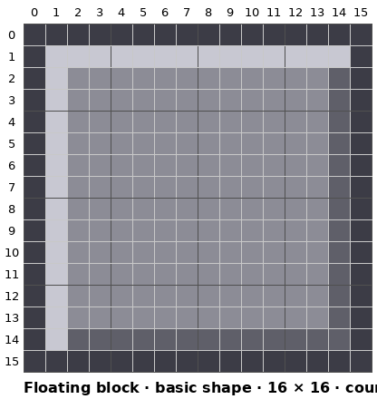
| Swatch | Part of the block | Colour code |
|---|---|---|
| 1 | Outline | #3C3C46 (very dark grey) |
| 2 | Stone | #8C8C96 (grey) |
| 3 | Light edge (top and left) | #C8C8D2 (light grey) |
| 4 | Dark edge (bottom and right) | #5F5F69 (dark grey) |
3A · New sprite, 16 × 16
- Open a new browser tab (Ctrl+T) and go to piskelapp.com. Click Create Sprite.
- Click the Resize icon. Check Maintain aspect ratio is still unticked (Piskel remembers it). Type 16 in Width and 16 in Height and click Resize. Close the panel.
- Optional: make the Block palette. In the Palettes panel, click +. In Name, type Block. Add the 4 colours from the table above, in order (first square #3C3C46): click a square, or the dashed + square for a new one, then type its code in the box under the colour picker and press Enter. Click Save. The panel shows Block with swatches 1 to 4. (The dropdown beside + switches between your palettes.)
- Make sure the grid is showing (the quick # button above the Preview) and zoom in until the square fills the middle of the screen.
3B · Outline and fill
- Pick #3C3C46 (swatch 1), choose the Rectangle tool, and drag from the top-left square to the bottom-right square. A dark box appears around the edge.
- Pick #8C8C96 (swatch 2), choose the Paint bucket , and click inside the box. It fills grey.
3C · Light and dark edges
All four lines go just inside the outline, on the first ring of grey pixels.
- Pick #C8C8D2 (swatch 3) and choose the Stroke tool .
- Top: drag along row 2 from column 2 to column 15.
- Left: drag down column 2 from row 2 to row 15.
- Pick #5F5F69 (swatch 4).
- Bottom: drag along row 15 from column 3 to column 15.
- Right: drag up column 15 from row 15 to row 3.
3D · Bricks
Turn the plain stone into bricks. Copy the pattern, or draw your own brick layout.

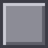
- Pick #5F5F69 (swatch 4) and the Stroke tool . Drag along row 8 from column 3 to column 14. This is the mortar line between the top and bottom bricks.
- Pick #C8C8D2 (swatch 3) and drag along row 9 from column 3 to column 14, right under the mortar. The light line makes the bottom bricks look like they stick out.
- Pick #5F5F69 (swatch 4) again. Drag down column 8 from row 3 to row 7 (one joint in the top row of bricks).
- Drag down column 5 from row 10 to row 14, and down column 11 from row 10 to row 14 (two joints in the bottom row). The joints don't line up, just like a real brick wall.
- Crack: with the Pen and #5F5F69 (swatch 4), click 3 pixels in a zigzag: row 4 column 12, row 5 column 13, row 6 column 12.
3E · Save and export
Same steps as 2F, with the name block:
- Save icon → Title block → Save as .piskel. You get block.piskel.
- Export icon → PNG tab → Download under Spritesheet file export. You get block.png.
Part 4 · Log platform
A log is a cylinder lying on its side. Rounded ends and a light stripe near the top make a flat drawing look round. The detailed version adds a sawn-off end with tree rings.
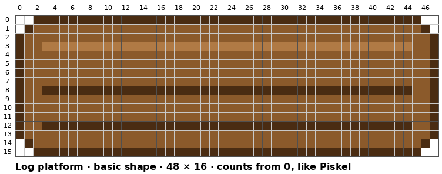
| Swatch | Part of the log | Colour code |
|---|---|---|
| 1 | Outline | #4A2C12 (very dark brown) |
| 2 | Bark | #8B5A2B (brown) |
| 3 | Light stripe | #B07A45 (light brown) |
| 4 | Bark lines and knot | #6B4220 (darker brown) |
| 5 | Cut end (the wood face) | #DCB478 (pale wood) |
| 6 | Tree rings | #A87444 (medium brown) |
4A · New sprite, 48 × 16
- Open a new browser tab, go to piskelapp.com and click Create Sprite.
- Resize to 48 wide and 16 high (Maintain aspect ratio unticked). Close the panel.
- Optional: make the Log palette. In the Palettes panel, click +. In Name, type Log. Add the 6 colours from the table above, in order (first square #4A2C12): click a square, or the dashed + square for a new one, then type its code in the box under the colour picker and press Enter. Click Save. The panel shows Log with swatches 1 to 6. (The dropdown beside + switches between your palettes.)
- Make sure the grid is showing (the quick # button above the Preview) and zoom in.
4B · Outline and round ends
- Pick #4A2C12 (swatch 1), choose the Rectangle tool, and drag from the top-left square to the bottom-right square.
- Choose the Eraser tool (hover the tools to find it). At the top-left corner, click 3 pixels to erase them: the corner pixel, the one to its right, and the one below it. The corner now has a small notch.
- Choose the Pen tool and click the pixel diagonally inside the notch (row 2, column 2). The corner is now rounded.
- Do the same at the other three corners. The pixels to add with the Pen are row 2 column 47, row 15 column 2, and row 15 column 47. Use the picture grid to check.
4C · Fill and bark lines
- Pick #8B5A2B (swatch 2), choose the Paint bucket , and click inside the log. If the colour spills outside, a rounded corner has a gap: press Ctrl+Z and check that corner against the picture.
- Pick #B07A45 (swatch 3), choose the Stroke tool , and drag along row 4 from column 4 to column 45. This is the light shining on the top of the log.
- Pick #6B4220 (swatch 4) and drag two more lines, from column 4 to column 45: one on row 9 and one on row 13. These are the bark lines.
4D · Cut end and knot
Show the sawn-off end of the log with its tree rings, and add a knot in the bark. Copy the pattern, or make up your own.
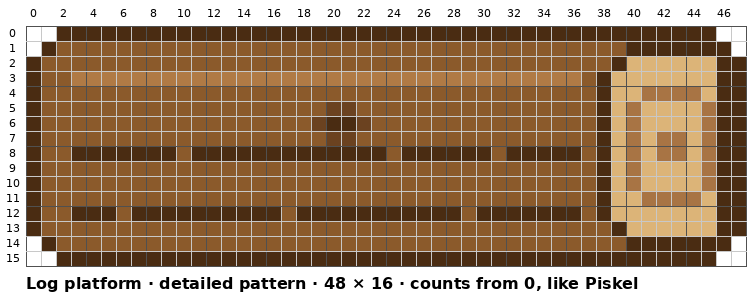
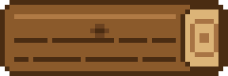
- Clear the way: pick the bark colour #8B5A2B (swatch 2) and the Stroke tool . Drag over rows 4, 9 and 13 from column 38 to column 46. The right ends of the three lines disappear, so they won't cut through the wood face.
- Edge of the cut end: pick #4A2C12 (swatch 1) and, with the Pen, draw the tall oval at the right end, as in the picture: column 39 from row 4 to row 13, column 47 from row 4 to row 13, row 2 and row 15 from column 41 to column 46, and one corner pixel at each of row 3 and row 14 (columns 40 and 47).
- Wood face: pick #DCB478 (swatch 5) and the Paint bucket , and click inside the oval. If the colour spills into the bark, there is a gap in the oval: press Ctrl+Z and close it.
- Rings: pick #A87444 (swatch 6) and, with the Pen, draw a smaller ring inside the face (columns 41 to 46, rows 5 to 12) and a 2 × 2 dot in the very middle.
- Break the bark lines: still with #8B5A2B (swatch 2), click a few single pixels on the dark lines (rows 9 and 13) to put small gaps in them. Real bark is not one long straight line.
- Knot: pick #6B4220 (swatch 4) and draw a small ring of 6 pixels around columns 20 to 23, rows 6 to 8, then fill its centre 2 pixels with #4A2C12 (swatch 1).
4E · Save and export
- Save icon → Title log → Save as .piskel. You get log.piskel.
- Export icon → PNG tab → Download under Spritesheet file export. You get log.png.
Part 5 · Hand in
5A · Hand in
- Upload all six files to Google Classroom (classroom.google.com): ground.piskel, ground.png, block.piskel, block.png, log.piskel and log.png.
- Keep going another day: go to piskelapp.com, click Create Sprite, click the Import icon (far right edge) and open one of your .piskel files.
- Next: in Construct 3 (editor.construct.net), drag a PNG from your Downloads folder straight onto the layout. Drop it in the middle of Layout 1. The platform appears at its real, small size.
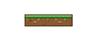
It becomes a sprite named after the file (for example ground), listed under Object types in the Project Bar (top-right panel). You can give it the Solid behaviour, so your character can stand on it. To build the game, follow Construct 3 Lesson 0: Jump and Fall.
You can give it the Solid behaviour, so your character can stand on it. To build the game, follow Construct 3 Lesson 0: Jump and Fall.